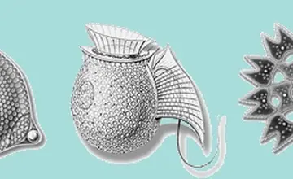
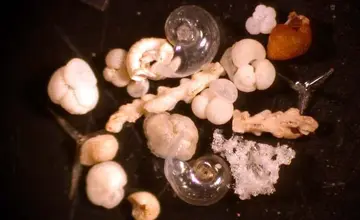
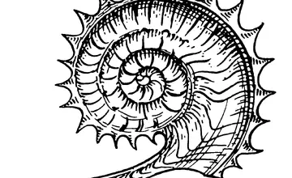
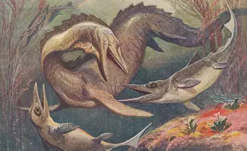
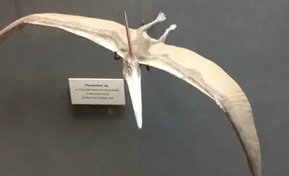
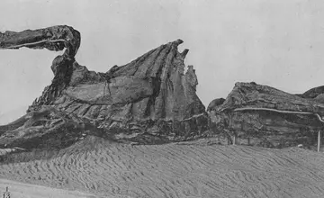
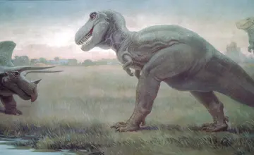
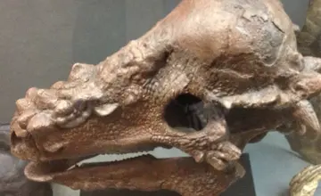

The asteroid was real, but the extinction was not a one-frame explosion. Students trace how impact energy, blocked sunlight, volcanic stress, ocean chemistry, and food webs turned one event into a months-to-years ecological collapse.
66 million years agoNon-avian dinosaursImpact winterMarine planktonSurvivor niches
Plate Reconstruction, Impact Site & Global Tsunami
Rendered with the shared 70 Ma MULLER2019 plate reconstruction (nearest discrete 10 Ma frame to 66 Ma). These are reconstructed modern coastline outlines, not exact ancient shorelines; toggle to 0 Ma to compare plate motion since the Cretaceous.
PRE-IMPACT
Chicxulub Impact Site · Yucatán Shallow Carbonate PlatformA ~10–15 km asteroid struck sulfate-rich shallow marine rocks, excavating a ~180 km crater, launching global ejecta, and triggering megatsunamis across adjacent ocean basins.
Impact site
Modeled relative strengthLower>1 m>10 m>100 m Gulf
70 Ma frame (nearest to 66 Ma) · Model: MULLER2019 · Reconstructed modern outlines, not exact ancient shorelines · EarthByte / University of Sydney (CC BY 4.0) ·
GPlates ·
EarthByte ·
Range et al. 2022
Earth Systems Cascade Lab
Explore how target-rock sulfur, pre-impact Deccan volcanism, and aerosol persistence interact across 10 post-impact years. Notice why a deep-ocean impact or volcanism alone produces a very different ecological outcome than the actual 66 Ma hit on sulfur-rich Yucatán rock.
Gypsum/anhydrite platform rock + wildfire soot drives light-blocking aerosols.
Pre-existing CO₂/SO₂ pulses weaken marine calcifiers and destabilize climate.
How long stratospheric particles stay aloft before settling out.
Geologists read the extinction from millimeters-thin layers in rock cores and outcrops from Gubbio to North Dakota. Select any stratum from youngest (top) to oldest (bottom) to inspect physical evidence.
Exact K–Pg Boundary · ~66.0 Ma · 2–3 cm dark clay
3 · K–Pg Boundary Clay (Iridium Spike)
A razor-thin clay layer enriched 30–100× in extraterrestrial iridium—an element rare in Earth's crust but abundant in asteroids. Below this line lie diverse Cretaceous fossils; immediately above it, ammonites and non-avian dinosaurs are gone.
Iridium concentration~45 ppb (30–100× spike)
Planktonic foraminifera diversityCollapse (<8%)
Fern spore share of pollen~38% (rising)
Biosphere status · extinctions, bottlenecks & survivors
K–Pg Biosphere Fate Ledger
The fossil record cannot give a literal death order, and not every affected group vanished completely. Filter by outcome or run the impact sequence to see which lineages collapsed, which suffered severe bottlenecks, and which niches survived. Click any photo to enlarge in the classroom lightbox.
0%estimated global species loss

Calcareous phytoplankton Microscopic photosynthetic algae built the base of Cretaceous ocean food webs; darkness and ocean acidification caused a severe collapse across most species. NASA illustration, public domain
Calcareous phytoplanktonMarine primary producers
At risk

Planktonic foraminifera Tiny calcium-carbonate shells preserve one of the sharpest turnover signals in deep-sea cores—over 90% of species disappeared at the clay layer. NOAA photograph, public domain
Planktonic foraminifera>90% of boundary species lost
At riskREEF BIVALVE
Rudist bivalvesCretaceous reef builders
At risk

Ammonites Shelled cephalopods survived 300+ million years across three earlier mass extinctions before vanishing at the K–Pg boundary as surface plankton collapsed. Pearson Scott Foresman, public domain
AmmonitesMarine cephalopod lineage
At risk

Mosasaurs Apex marine squamates (lizards, not dinosaurs) vanished once plankton collapse starved the fishes, cephalopods, and turtles beneath them. Heinrich Harder (1912), public domain
MosasaursLarge marine reptiles
At risk

Pterosaurs Powered-flight reptiles distinct from dinosaurs; even giant and coastal forms disappeared completely at the end of the Cretaceous. Archbob, CC0 public domain
PterosaursNon-avian flying reptiles
At riskARBOREAL AVES
Enantiornithine birdsMajor archaic bird lineage
At risk

Edmontosaurus annectens A 13-meter duck-billed herbivore preserving rare skin impressions; massive plant-eaters could not meet daily calorie needs when sunlight failed. AMNH historical plate (1912), public domain
Edmontosaurus annectensLarge hadrosaur
At riskARMORED HERBIVORE
Ankylosaurus magniventrisArmored herbivore
At risk

Triceratops & Tyrannosaurus Abundant right up to the boundary in western North America; neither heavy herbivore defenses nor apex jaws could survive food-web collapse. Charles R. Knight (c. 1928), public domain
Triceratops horridusCeratopsian herbivore
At risk

Pachycephalosaurus wyomingensis Thick-domed ornithischian skull cast showing that medium-sized non-avian dinosaurs also vanished at the boundary. Yinan Chen, public-domain dedication
PachycephalosaurusDome-headed ornithischian
At riskTyrannosaurus rex Top-level carnivores require vast herbivore biomass; when plant die-off felled Triceratops and Edmontosaurus, apex predators starved. Charles R. Knight (c. 1928), public domain
Representative examples only. Losses and survivals unfolded through interconnected land, freshwater, and ocean systems—not in this exact order.0 of 16 representative taxa evaluated
~100 g body massInsects, seeds & fruitBurrowing / sheltered
Mosasaurus hoffmannii
10–15 m marine lizardApex ocean carnivoreSurface-pelagic food web
Misconception vs Evidence
Misconception
Better framing
Instant explosion
The impact started a cascade. The mass extinction played out through climate, photosynthesis, and food webs.
All dinosaurs died
Non-avian dinosaurs died out. Avian dinosaurs survived as birds.
Fire killed everything
Fire, tsunamis, and heat mattered, but darkness, cooling, acidification, and starvation carried the global damage.
Mammals were smarter
Survival favored niches: small bodies, burrowing, scavenging, flexible diets, seeds, dormancy, and lower energy needs.
Classroom Prompt
Story of Numbers extension: Build a timeline where each number has a job. Which numbers show scale, which show duration, which show survival, and which reveal that tiny organisms can decide the fate of giant animals?